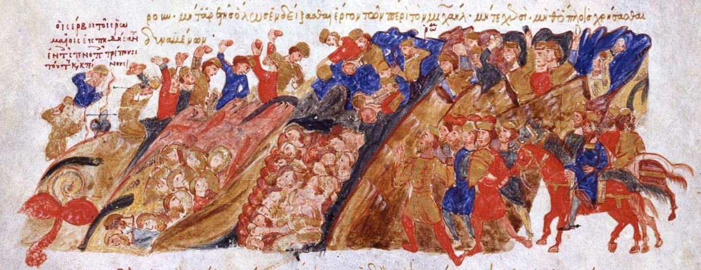

[1042] Битка код Бара/Битка на Туђемилском пољу
Текст са слике доље:
Он је пренио Јована Орфанотрофа са свиме што је посједова из манастира Монобата на острво Лезбос, Михајла некадашњег владара на Хиос, а константина на Самор.
То су прва дјела Мономаха у десетој години индикције. Једанаестог октобра, једанаесте године индикције, комета се појавила путујући с истока на запад
и била је виђена како сија током читавог мјесеца и указала је на нове непогоде. Стефан Војислав је побјега из Византије и успоставио себе у планинама илирским.
Он је сад водио и владао Србима и околним народима који су били римски поданици. Одбијајући да прихвати побуну, Мономах је посла писмо с упутством за тада
команданта Драча, племића Михајла, сина Анастаса логотета, да окупи војску Драча под своју команду, као и околних области и да оде у земљу Трибала да се сукоби са Стефаном.
Али Михајло, као човјек који је одгајан у сјенци и с љубављу [данас би се рекло под стакленим звоном] није посједова никакво војно знање.
Он је прихватио ово потпуно безидејно и без способности за то и тиме донио велику несрећу римској држави. Окупио је војску по упутствима (прича се 60000 војника)
и ушао је у земљу Трибала путујући путевима који су стрми, слабо проходни и толико уски да два коња не би могла једно уз друго ходати.
Срби су их пустили да прођу туда, али командант никада није размишљао о повратку нити је поставио какве страже да чувају пролаз.
Док је он улазио у земљу, плачка и палио по долини, Срби су окупирали уски пролаз и чекали изнад њега да се врати.
Кад је Михајло мислио да је било доста плачке (јер је у том тренутку има довољно злата и заробљеника) мишљаше да је добро враћати се. Али док су његови људи -
Ође је прекид, јер је изгубљено наредних 20 страна књиге Јована Скилице.
Оно што се зна из других извора је то да су Дукљани каменовали византијску војску и да су правили одроне те да је страдало седам заповједника Византије.
Ова побједа означава почетак хиљадугодишње историје државности Црне Горе, пошто је Стефан Војислав први успио да стекне независност од Византије. Данас се овај датум прославља као дан војске Црне Горе.